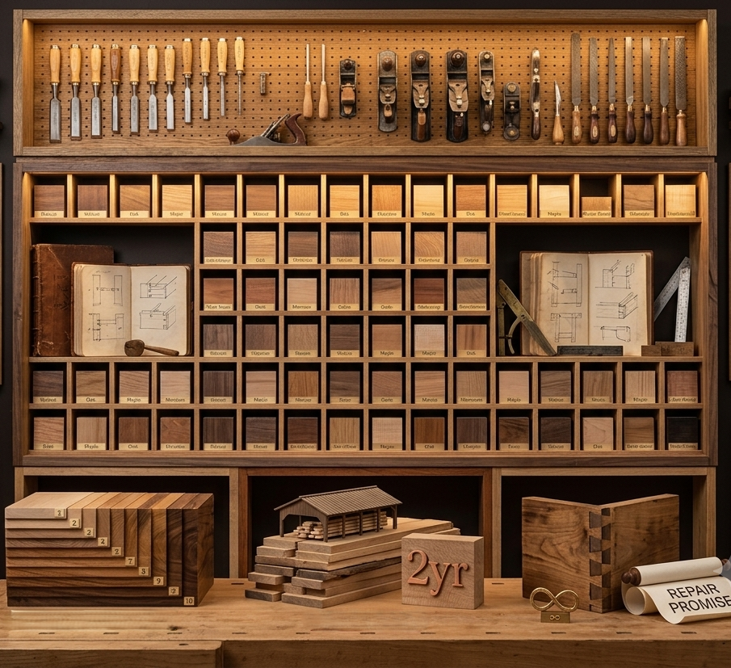
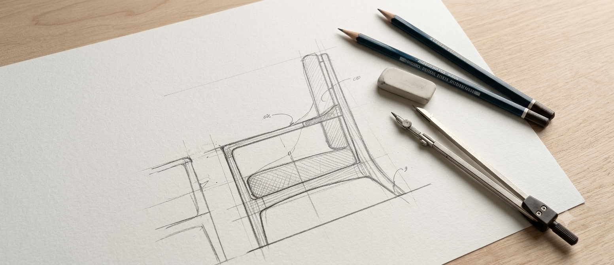
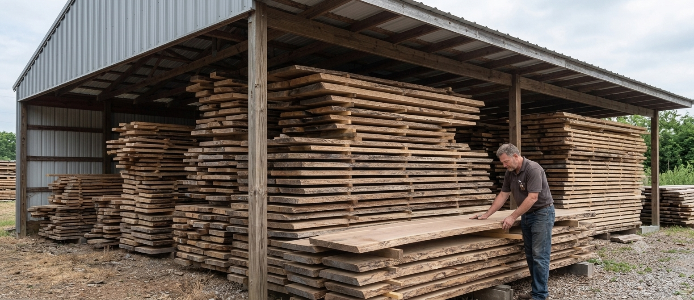
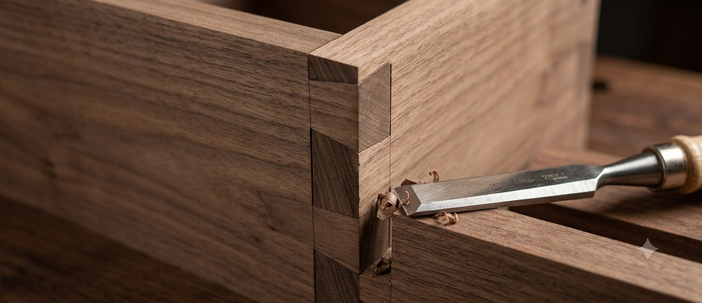
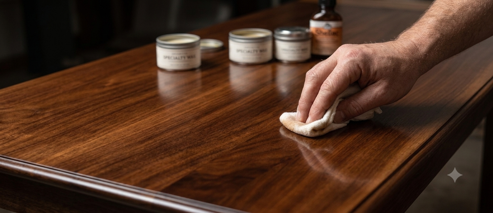
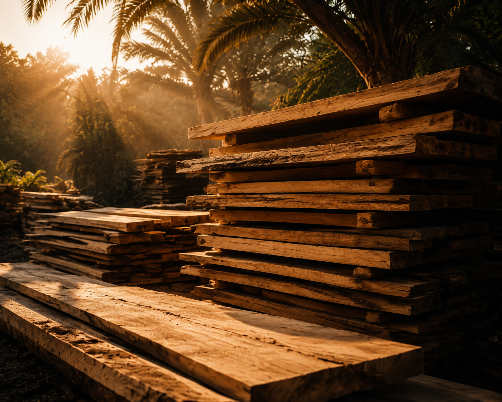
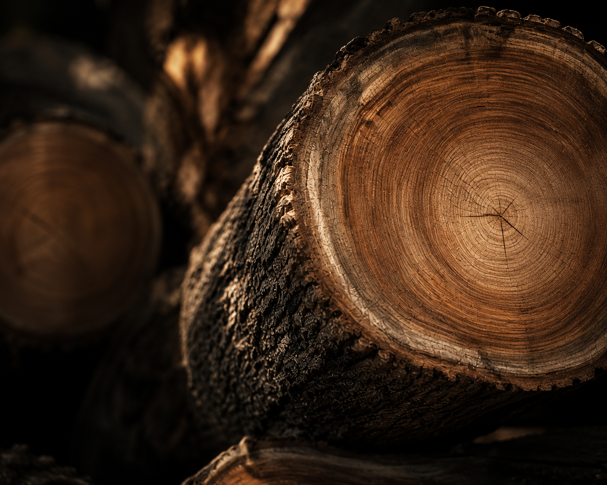

Since 2020, our atelier in Alexandria has been more than a workshop. It is a living archive of technique, where timber is listened to, understood, and shaped into heirlooms.


Every piece begins as a pencil drawing on paper. Proportions are debated, curves are refined, and the soul of the piece is defined.

Winter-felled wood is air-dried for two seasons. We select boards for grain continuity, matching them by eye to the sketch.

Hand-cut dovetails and mortise-and-tenon joints. We use no screws where wood can hold wood. The frame is assembled dry.

Twelve thin layers of shellac and wax are rubbed by hand into the grain. This slow build creates a depth that machines cannot replicate.
Every piece of furniture starts with carefully selected materials. We use premium Beechwood, Plywood, and Swedish Wood, chosen for their durability, stability, and versatility. Combined with expert craftsmanship, these materials allow us to create furniture that is both elegant and built to last.
Strong, durable, and ideal for high-quality furniture frames.
Engineered for stability, strength, and long-lasting performance.
Lightweight, reliable, and perfect for modern furniture construction.


Opened our first showroom in Riyadh, Saudi Arabia, laying the foundation for Adam's House Furniture with a passion for quality and timeless craftsmanship.
Opened our Alexandria, Egypt showroom, expanding our journey and bringing our handcrafted furniture to new customers.
The showroom has moved to Alexandria, Sidi Bishr Qebli, 181 Gamal Abd El-Nasir.
Adam's House Furniture continues to create high-quality furniture while combining traditional craftsmanship with modern design, serving customers across Egypt.
We open the atelier doors to clients and designers on the first Friday of every month. Come see the sawdust, smell the shellac, and watch your furniture take shape.
Book a Workshop Tour